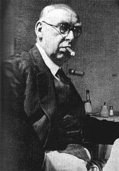
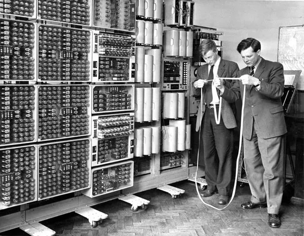
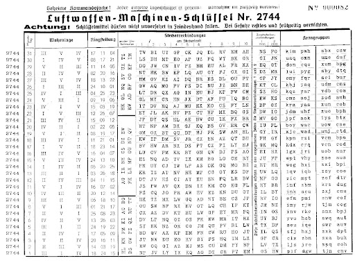
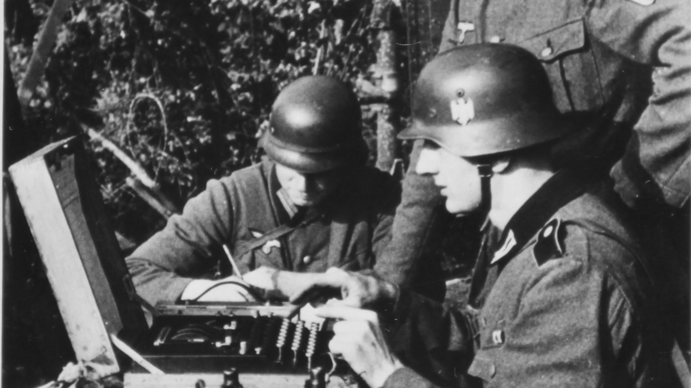
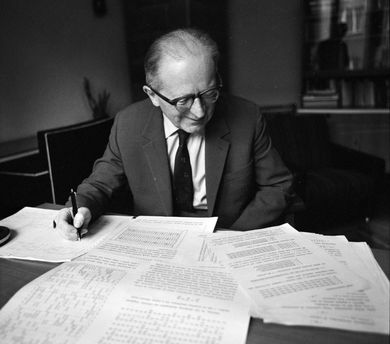
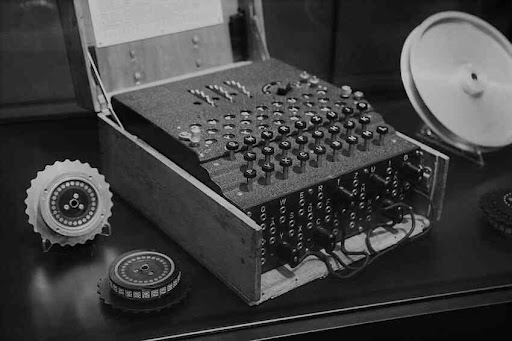
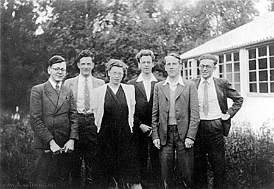
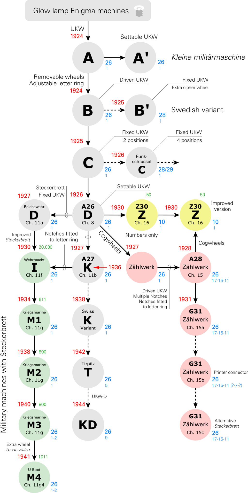

Що ж потрібно?
З принципи роботи стає зрозуміло, що для нас є важливим:
- Номери роторів
- Початкове положення роторів
- Положення комутаційної панелі
Але ж як німці могли передати всі ці параметри кожному німцю в кожному куточку планети?
Отож, історія дешифрування коду “Енігми” пов’язана з німецьким офіцером, який працював в шифрувальному штабі Рейсхверу і який був специфічною людиною:
Ганс-Тіло Шмідт мав певну проблему. В нього були коштовні звички — він любив дорогих дівчат, дороге вбрання, дорогі сигари, дорогі бренді та відпустки. Справжньою ж проблемою були його подружки. Вони дійсно йому дорого обходилися. В нього була проблема, але й мав її вирішення. Одного дня він з’явився у французькому посольстві у Берліні і попросив про зустріч з військовим аташе. Шмідт сказав йому, що в нього є документи, які того можуть зацікавити. В ті часи посольство Франції мало навіть спеціальну процедуру щодо такого роду випадків, бо дуже багато колишніх німецьких військових з’являлося там і пропонувало якісь таємні документи. З Парижу викликали експерта по таких документам і було домовлено про зустріч. Тепер хочу Вам представити Гюстава Бертрана. Він був єдиним членом спеціальної секції D в розвідувальному відомстві і його завданням була оцінка автентичності і цінності документів.

Була організована зустріч, яка відбулася в одному готелі в Бельгії. Коли Ганс-Тіло Шмідт разом з опікуном з французької розвідки сидів в барі, попиваючи бренді і покурюючи сигару, Бертран пішов до вбиральні, де зробив фотографії документів.
Він швидко зрозумів, що вони справді мають цінність. Справа в тому, що це була інструкція обслуговування секретної шифрувальної машини німецької армії “Енігма”. Після зустрічі всі розійшлися задоволені. Шмідт повернувся з документами в Берлін і повернув їх вчасно в сейф в понеділок рано, а окрім того в його гаманці лежало 5 тисяч рейсхмарок. Бертран теж був щасливий, бо здобув фото інструкції з обслуговування “Енгіми” і тепер французи могли мати можливість прочитати шифрограми німецької армії.
Однак, як виявилося, щоб розшифрувати послання “Енігми” було замало мати лише інструкцію з її обслуговування, але й необхідно було знати її будову і принцип роботи. Про це Гюставу Бертрану сказали і його французькі колеги, і британці, до яких він звернувся за допомогою.
Проте Бертран не здавався і вирушив до Варшави, де зустрівся майором Ґвідо Лангером, що очолював Бюро шифрів Польщі.
Лангер зрадів, дізнавшись про інструкцію і запевнив французького гостя, що це дуже важлива річ. В Бюро шифрів працювало три блискучих математика, які вільно володіли німецькою мовою ¬– Маріан Режевський, Генріх Зігальський і Єжи Рожицький, яким і було доручено розгадати загадку “Енігми”
Так першою за цю справу взялася Польща, яка опинилася в дуже вразливому становищі після Першої світової війни. Довгий час польським дослідникам не вдавалося розшифрувати ніякі повідомлення німців, але тепер коли вони мали інструкцію, де містилось пояснення для шифрувальника, учені з бюро створили практично точну копію "Енігми". Згодом розробили метод обчислення початкових установок, за допомогою якого нарешті вдалося зчитувати зашифровану німцями інформацію.

Як їм це вдалося?

Оператор самостійно встановлював ротори та положення комутаційної панелі за вказаним ключем. Це був листочок з номером дня, який робили кожного місяця, використаний ключ вирізали та спалювали. Але саме застарілі папери Шмідт передав. Тому і за них ніхто не хотів братись, бо було не зрозуміло з чого почати, що це таке і який принцип дії. Але поляки так не думали, адже відчували ворожі наміри своїх сусідів і робили все можливе аби розгадати енгіму.
У дешефрувальника також був ключ та енігма, тому дешифровка була проста – ввести початкові данні відповідно ключу та вводити шифрований текст.
Коли в поляків були інструкція по використанні енігми, застарілі ключі та на основі цього вони створили копію енігми, що дуже допомогла в розшифровці.
Німці були дуже занепокоєні, що їх можуть розшифрувати, тому вони виріши посилити метод шифрування, що і полегшило роботу дешифровки.
Німці подумали, що якщо одним і тим самим ключем шифрувати багато повідомлень, то в день буде отримуватись багато інформації одним і тим самим ключем дня, що значно полегшить роботу дешифрування, на відмінно від дешифровки маленьких повідомлень.
Тому німці ввели разові ключі для кожного пересланого повідомлення.
Оператор виставляв початкові налаштування відповідно до ключа дня і придумував разовий ключ, який представляв собою положення трьох роторів і зашифровував його двічі підряд, щоб запобігти помилки внаслідом перешкод зв’язку або помилки оператора.
Оператор міняв далі свої налаштування на разовий ключ та шифрував всі інші повідомлення відповідно йому.
Щоб розшифрувати потрібно ввести денний ключ, прийняти повідомлення, розшифрувати, ввести разовий ключ та працювати далі . Тому однаковим ключем було зашифровано лише маленький кусочок тексту.

Реєвський одразу зрозумів що саме разові ключі і є їхньою вразливістю.
Наприклад разовий ключ - АВС, вводили його двічі ABCABC
Енігма видає – RTLOUG, адже одна і та сама буква кожен раз шифрується по іншому.
Але оскільки разовий ключ передавався двічі підряд, то перша і четверта буква є зашифрованим варіантом однієї букви (в нашому випадку буква A стає – R, O), тобто друга з п’ятою і третя з шостою буквою, Реєвський виписував їх та помітив ланцюг.
Тобто таким чином ми дійшли до тієї самої букви і кожний день довжина цих ланцюгів різна і не залежить від комутаційної панелі, тобто деякі букви можуть змінитись, але довжина залишиться тією самою
Звідси він зрозумів, що довжина залежить тільки від установки роторів, тому не потрібно перебирати міліарди тисяч варіантів а лише 105 456 одна з яких точно буде пов’язана з кількістю зв’язків в групі ланцюгів.
Наступний рік Реєвський займався перевіркою кожного положення та створив так званий каталог ланцюгів і після того як робота була завершена залишалось лише взяти разовий ключ і проаналізувати довжину ланцюга цього дня, звірити із каталогом в якому написано за якого положення ротора здійснювалась такий ланцюг. Ключ дня був майже зламаний, залишилось зрозуміти, як була встановлена комутаційній панель.
Складних рішень Реєвський не вигадував, все було доволі просто. Він зняв всі комутаційні установки (кабелі) та вводив зашифроване смс, іноді зявлялися вирази які мали значення але відрізнялись лише декілька букв.
Аналізувавши це було знайдено положення комутаційної панелі, але будь яка змінена в способі передачі повідомлення німцями і каталог можна було викинути, тому Реєвський створив машину, яка згодом отримала назву - Бомба, що представляла собою 6 спільно працюючих перероблених версій енігми (бо три ротора, які могли мінятись місцями і 3!=6) в кожній з них було встановлено по 1 з 6 положень роторів, така машина допомагала встановити автоматичний пошук положень роторів менше ніж за 2 години.

Весь наступний рік, польські криптографи успішно застосовували цей спосіб, але ж не забуваємо, що в керівництва вже давно були ці ключі, адже Шмідт все продовжував постачати секретні документи з Берліну.
Отже на протязі 7 років Шмід надсилав документи (шифрувальні книги з ключами на кожен день), але керівництво хотіло підготуватись до моменту коли Шмід більше не зможе надсилати документи, або зв'язок різко обірветься, тому що почнеться війна.
Все це продовжувалося до 1938 року поки німецькі криптограми знов не змінили принцип роботи енігми для підвищення стійкості.
Як вони це зробили?
Доволі просто операторам надали додатково ще два ротора, що змінило кількість пложень з 6 на 60 (6*5*4) та додали кабелі для комутаційної панелі з 6 до 10 штук, що збільшило кількість перестановок букв з 12 до 20, тобто кількість можливих ключей збільшилась в кілька разів, що навіть машина Реєвського була безсила.
На початку 1939 році коли розшифровка повідомлень була вкрай необхідна, а дешифровка стала неможливою, зв'язок з Шмідтом обірвався, всі 7 років він передава ключі , які були нікому не потрібні, а в момент його необхідності він зник та й всю роботу Реєвського потрібно було починати заново, адже ні каталог, ні машина - Бомба нічого вже не було дієздатним із оновленням енігми.
28 квітня 1939 року - Німеччинна розриває Акт про ненапад з Польшою, що стало поштовхом до передачі всі данних, над якими працював Реєвський багато років, передати союзникам – Франції та Великобританії, поки не стало пізно.
1 вересня 1939 року - початок Другої Світової війни.

Тюрінг очолив групу вчених з якими йому довелося створити неможливе – взламати енгму. Але зламувати з нуля йому не прийшлось, адже його зарання ознайомили з роботами Реєвського і враховуючи, що німці не змінили принцип передачі разового ключа, повторюючи його двічі на початку кожного повідомлення, взлам ключа дня довго не примусив себе чекати. Але головною задачею Тюрінга було придумати альтернативу взлома на той випадок, якщо німці все ж таки здогадаються що їх разовий ключ, який створювався з розрахунком на те що посилить безпеку і є їхнім головним вразливістю.
Під час знайомства із раніше розшифрованими німецькими повідомленнями тюрінг помітив одну цікаву особливість німців. Кожного дня в 6 годин ранку вони (німці) надсилали зашифрований прогноз погоди з метеорологічної станції. Це означало що приблизно в цей час перехоплене повідомлення від німців буде містити слово погода, що по-німецьки - wetter , враховуючи граматику німців Тюрінг передбачав, яка саме послідовність зашифрованих символів буде саме цим словом.

Зіставлення зашифрованого фрагмента із відкритим називається «кріп» і таких кріпів у німців було досить багато. В листах дуже часто зустрічалось число один (eins) чи гасло другої світової війни хай гітлер (Heil Hitler) . Тому єдине що потрібно було зробити - це найти таку послідовність роторів при якій певне слово, наприклад погода, давало таку зашифровану послідовність. Звичайно перевірити всі послідовності в ручну було неможливо враховуючи їх кількість, тому Тюрінг пішов по стопах Реєвського. Якщо один зіставляв ланцюги із повторювальних букв в ключах дня, то Тюрінг зв’язував букви відкритого тексту із зашифрованим текстом в крібі.
Наприклад від першої літери - W в розшифрованому тексті, ми ідемо до першої літери E, яка знаходиться під нею в зашифрованому тексті. Потім ми знов шукаєм букву E в розшифрованому варіанті та ідемо до букви T, але від букви T до букви J ми не ідемо, адже цієї букви в слові wetter немає, а наступна T має під собою букву W, нашу початкову, отже ланцюг замкнувся
При цьому ми знаємо що на другій букві ротор буде повернутий на одну позицію відносно першої літери, а на третій букві – на три позиції
Тому Алан використовував одразу три різні працюючі шифрувальні машини, де перша намагалась зашифрувати W – E, у другої ротор був повернутий на одну позицію і намагався зашифрувати E – T, а третя T – W, де ротор був повернути на три позиції
При цьому Тюрінг створив такий електричний ланцюг, щоб повністю виключити вплив комутаційної панелі, що як і Реєвському в свій час дозволило виключити міліарди можливих ключем, які комутаційна панель могла створювати.
Отже залишалось 17 576 варіантів положень шифратора (26*26*26), що при зміні одного положення один раз на секунду дозволяло справитись з цим всього за 5 годин, але є одний нюанс.
Всього на енігмі могли розташуватись лише 3 ротора із 5, що дає комбінацію 60 (5*4*3) можливих варантів розташування роторів, а от же ні на одній з трьох машин тюрінга могло просто не виявитись правильного положення , але про це буде повідомляти спеціальна лампочка, яка загориться тільки тоді, коли з’явиться правильне положення роторів, а якщо лампочка не загориться, тоді потрібно встановити шифратори в іншому із 60 можливих положень і зробити це все ще раз або ж у Тюрінга повинно було бути одразу 60 комплектів такихпристроїв, які могли б паралельно працювати.
На початку 1940 року Тюрінг закінчив розробку свого нового пристроя, яке складалося із 12 електрично зв’язаних шифраторів що дозволяло працювати з набагато довшими ланцюгами літер. Цей пристрій дуже нагадував пристрій Реєвського, тому воно також отримало назву - Bomb
Однак не дивлячись на всі надії, які покладали на цей пристрій, він працював дуже повільно і на пошуки одного ключа ішло близько тижня . Тому Тюрінг продовжував удосконалювати свій пристрій і через декілька неділь ціль була досягнута, залишалося лише дочекатися, коли зберуть усю вдосконалену БОМБУ , але приблизно в цей час 1 травня 1940 року німці зрозуміли що натворили із своїми разовими ключами і перестали їх повторювати двічі, тому кількість дешифрованих повідомлень німців зменшилась в рази, але вже 8 серпя прийшла нова сконструйована Тюрінгом бомба, що могла розгадати ключ всього за 1 годину.
Німців занапастила їхнє ж зайве захоплення шифрувати все і всюди, адже кріпів ставало дедалі більше, що значно спрощувало роботу британцям.
Варто зазначити що було дуже багато модифікацій енігми, які працювали по різному. Тому британцям для початку потрібно було достати конкретну енігму ціною багатьох життів солдатів, потім дивитись як вона влаштована та придумувати нову систему взлому і звичайно про це ніхто не мав дізнатись адже якщо ти не знаєш що тебе взломали, то ти нічого не будеш міняти в своїй системі безепеки, тому британці не розкривали свій успіх навіть союзникам .
Щоб не виникло підозр були навіть проведені фіктивні розвідувальні операції, радіо перехвати та навіть розвідувальні операцій в яких були задіяні не лише британці, можна сказати британці продовжували грати у війну для німців, паралельно рятувавши тисячі життів та наближаючи перемогу над німцями.
